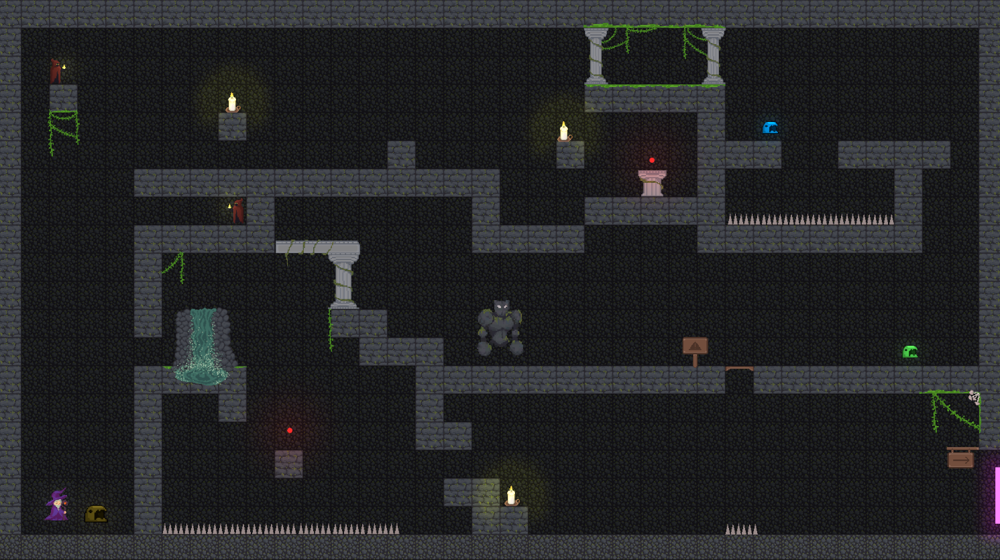
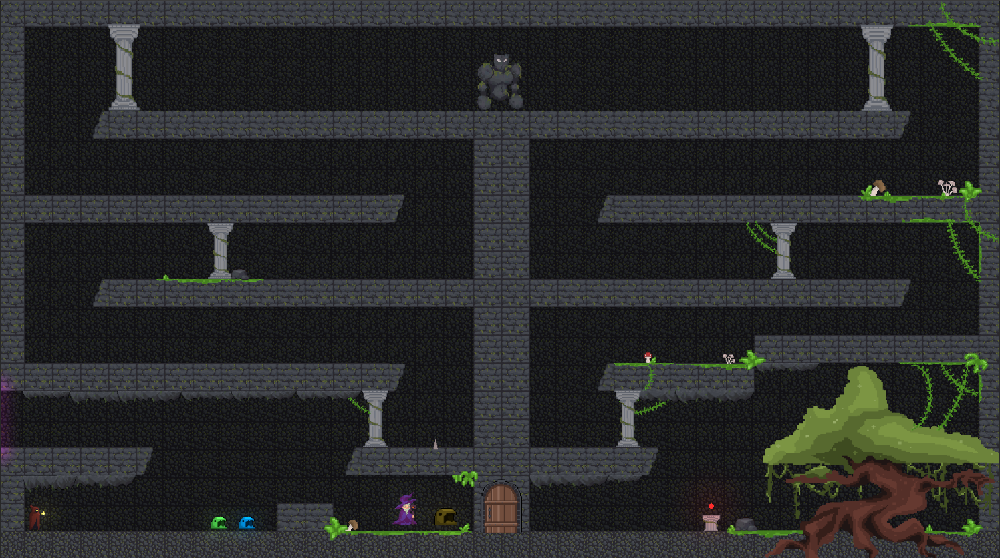
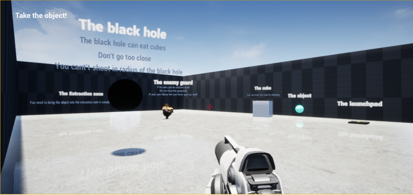
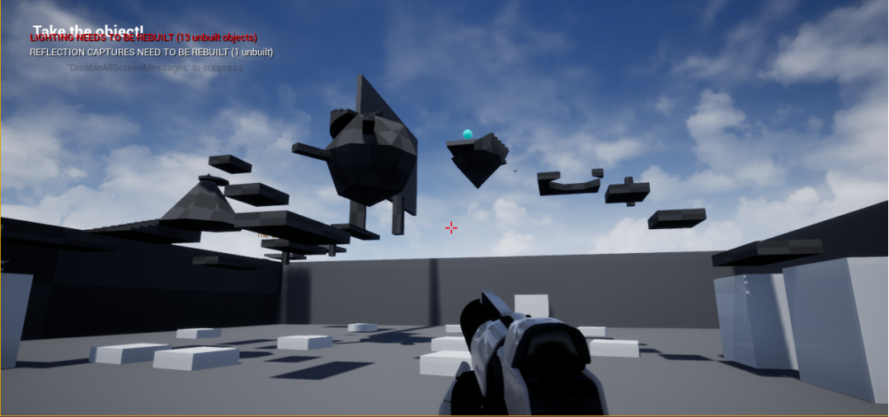
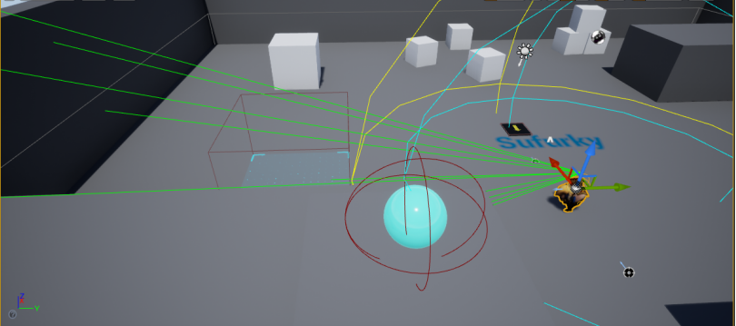

PORTFOLIO — GAME PROJECTS / SHEET 00
ŠTEFAN
FOLTÁN
Software developer & systems AI
From decision logic for AI bots and physics-driven mechanics to team production in Unity — I enjoy building systems that never quite follow the rules I give them :). Below are three game projects that show it best.
DRAWING SET / 01 — 03
Selected Projects
Bound by Shards
Bound by Shards is a local multiplayer platformer for three players in a retro 2D pixel-art style. Players work together to make it through each level and find a path to the goal. We worked in a team of 4 (2 programmers, 2 artists) for about 2 months.
The game features several enemy AI types, a range of player abilities, and combined mechanics. A tilemap system lets us generate levels quickly, and the game also supports playing with a controller.


Sufurky



A hard platformer simple graphics. In every level the player has to find an object and carry it to the goal zone while avoiding an enemy. The maps also include hidden paths and a range of mechanics — a black hole that sucks in objects, bounce pads... difficulty and level design both ramp up steadily as the game goes on.
Most of the gameplay logic (shooting, picking up objects, the guard AI's "hearing", level restarts) was written directly in C++; Blueprints were mainly used to wire things up to the scene and the UI.
AI bot for StarCraft: Brood War
This thesis extends Steamhammer, an advanced open-source bot for the RTS game StarCraft: Brood War. After analyzing its weaknesses in specific matchups, I designed and implemented improvements to its decision-making — mainly attack aggression, strategy selection, and recognizing the opponent's race and opening — and validated every change over at least 100 played matches so the results weren't just chance.
RESULTS — WIN RATE BY MATCHUP, BEFORE → AFTER
Every scenario verified on ≥100 matches.
SMALLER STUDIES
Other Projects
ATP Tennis Match Outcome Prediction
Machine learning on historical ATP match data — custom feature engineering (60+ features), logistic regression, Random Forest, and XGBoost (AUC up to 0.846), plus an interactive Shiny app.
GitHub repo ↗Development of the ECEHub Web Application
Development work on the ECEHub web application (FIIT STU), as well as performance and load testing using Apache JMeter. This also included automated registration of test users, followed by measuring the response times of individual endpoints across various load levels.
[ADD REPO/REPORT LINK HERE, if you want] ↗+ a handful of smaller projects (mostly AI/ML) not detailed here
A web app for the town of Hontianske Tesáre to look up waste-collection schedules by chip/transponder number — Node.js, Express, SQLite.
ACROSS PROJECTS